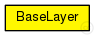
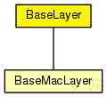

This documentation is released under the Creative Commons license
This documentation is released under the Creative Commons licenseBase module for all layer modules. Defines the in and out gates
The following diagram shows usage relationships between types. Unresolved types are missing from the diagram. Click here to see the full picture.
The following diagram shows inheritance relationships for this type. Unresolved types are missing from the diagram. Click here to see the full picture.
| Name | Type | Description |
|---|---|---|
| BaseMacLayer | simple module |
Base module for every mac layer module |
| Name | Type | Default value | Description |
|---|---|---|---|
| notAffectedByHostState | bool | false |
| Name | Direction | Size | Description |
|---|---|---|---|
| upperLayerIn | input |
from upper layer |
|
| upperLayerOut | output |
to uppe layer |
|
| upperControlIn | input |
control from upper layer |
|
| upperControlOut | output |
control to upper layer |
|
| lowerLayerIn | input |
from lower layer |
|
| lowerLayerOut | output |
to lower layer |
|
| lowerControlIn | input |
control from lower layer |
|
| lowerControlOut | output |
control to lower layer |
// // Base module for all layer modules. Defines the in and out gates // simple BaseLayer { parameters: bool notAffectedByHostState = default(false); gates: input upperLayerIn; // from upper layer output upperLayerOut; // to uppe layer input upperControlIn; // control from upper layer output upperControlOut; // control to upper layer input lowerLayerIn; // from lower layer output lowerLayerOut; // to lower layer input lowerControlIn; // control from lower layer output lowerControlOut; // control to lower layer }
This documentation is released under the Creative Commons license